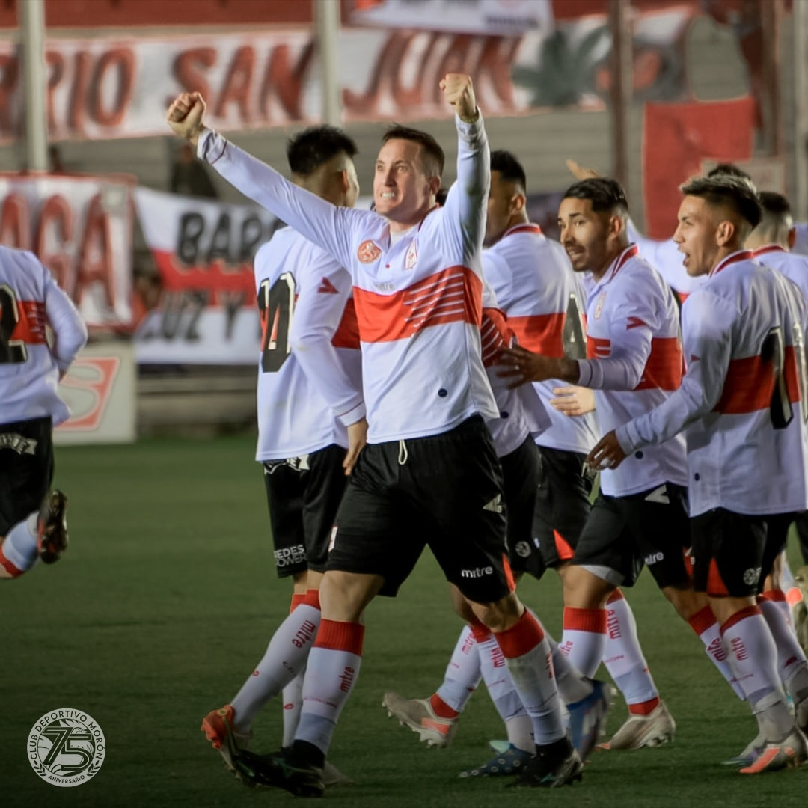
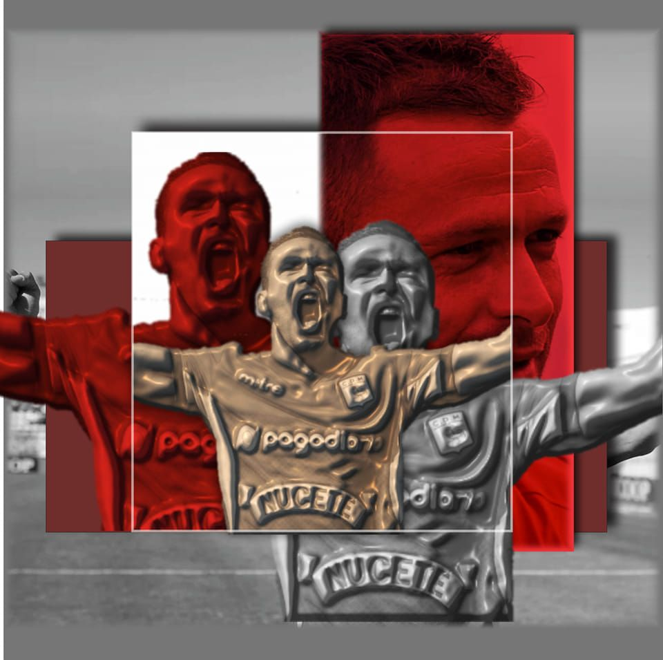
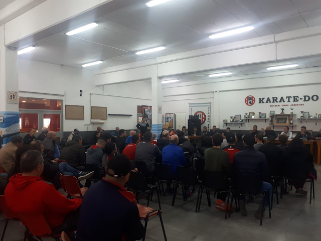

No hace mucho tiempo me di cuenta que ser de Morón, no sólo es ser hincha de un equipo de fútbol. El mundo Morón engloba muchísimo más que una simple pelota y once jugadores atrás. No somos hinchas de los resultados ni de los trofeos ni de los jugadores. Cuántas veces habremos escuchado la pregunta “¿y de Primera de que equipo sos?” y nos calentamos con esa persona. ¿A cuántos de nosotros nos reconocen en nuestros laburos o en grupos de amigos como “el hincha de Morón” como si fuésemos un bicho de otro planeta? Y cuántas veces intentamos explicarles a familiares o a conocidos cuál es el motivo que nos lleva a ser hinchas de Morón, si ellos piensan que es mejor ser de un equipo que salga campeón todos los años. Es hacer esfuerzos desmedidos por muy poco a cambio. Es acostumbrarnos a perder más que ganar, pero cada vez que triunfamos festejarlo como si fuese la última vez. Es el placer de sufrir. Es inflar el pecho cuando te encontrás a otro con la camiseta del Gallo puesta y fundirte en un abrazo. Es familia. Es sentido de pertenencia. Es un estilo de vida que pocos pueden entender. Es un sello indeleble para nosotros y para las próximas generaciones. Es ser hincha del barrio, de las calles, de las pintadas, de la gente. De nuestras hermosas canchas, de nuestra inmaculada camiseta, de nuestro erguido, altanero y peleador Gallo. No tiene explicación. Se vive, se siente. SER HINCHA DE MORÓN ES NUESTRO MAYOR ORGULLO.

Y para vos... ¿Qué es SER HINCHA DE MORÓN?
SEGUINOS


Noticias
Último partido
Deportivo Morón 1 - Temperley 1
El Gallo volvió a empatar por cuarta vez consecutiva, esta vez fue 1 a 1 contra Temperley en el Nuevo Francisco Urbano. La próxima fecha quedamos libres.
Sumate a la campaña
Una Estatua para Damián
¡Se viene el homenaje que el ídolo se merece! Vos también podés ser parte de este hecho histórico. Organizado por un grupo de socios e hinchas de toda la vida ¡SUMATE!
Institucional
Reunión Informativa
El pasado Domingo 10 de Julio se realizó una reunión informativa por parte de la Comisión Directiva informando la situación económica y administrativa del Club.